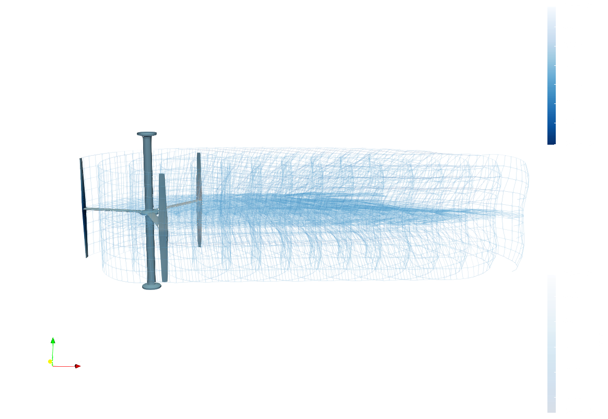

Marine Hydrokinetic RM2
In this example we use the OWENS scripting method to model the RM2 turbine, based on “Experimental Study of a Reference Model Vertical-Axis Cross-Flow Turbine”, 2016, Bachant et al. While the windio modeling option based on input yaml files is also included in the OWENS.jl/examples directory, The scripting method enable much more flexibility and the ability to add detailed comments on the setup and use. Note that the documentation contains an API reference for nearly all of the functions where more details can be found also accessed via the julia REPL by loading the module of interest, and: ? ModuleName.functionname()

This example is also available as a Jupyter notebook: E_RM2_Medium.ipynb.
Load in all of the modules that we'll be using, and prettify the plotting options
import OWENS
import OWENSAero
import DelimitedFiles
using Statistics:mean
using Test
import FLOWMath
import HDF5import PyPlot PyPlot.pygui(true) PyPlot.rc("figure", figsize=(4.5, 3)) PyPlot.rc("font", size=10.0) PyPlot.rc("lines", linewidth=1.5) PyPlot.rc("lines", markersize=3.0) PyPlot.rc("legend", frameon=false) PyPlot.rc("axes.spines", right=false, top=false) PyPlot.rc("figure.subplot", left=.18, bottom=.17, top=0.9, right=.9) PyPlot.rc("figure",maxopenwarning=500) plot_cycle=["#348ABD", "#A60628", "#009E73", "#7A68A6", "#D55E00", "#CC79A7"]
# path = runpath = splitdir(@__FILE__)[1]
runpath = path = "/home/runner/work/OWENS.jl/OWENS.jl/examples/literate" # to run locally, change to splitdir(@__FILE__)[1]
nothingHere we set the parametric inputs to the preprocessing and run methods. Defaults are used otherwise Note that for the OpenFAST coupling, such as adi_lib, setting these to nothing will force the program to use the precompiled binaries that are part of the OWENS installation. Again, please refer the to API reference for more detailed options of inputs, but of note is that we are running with AeroModel = "AD" which will automatically generate all of the AeroDyn files necessary to run the structural definition generated here. Also note that this scripting method relys on the NuMAD formatted CSV files for the composite layup that gets run through PreComp.jl to calculate the sectional properties. Finally, this has been shortened to enable automated deployment, update as desired.
turbineType = "H-VAWT" # turbine type, for the automatic meshing
Vinf = 1.2 # inflow velocity
TSRrange = [3.5]#LinRange(1.0,5.0,2) range of tip speed ratios
Nslices = 20 # vertical discretizations if DMS or AC aero model
ntheta = 30 # azimuthal discretizations if DMS or AC aero model
structuralModel = "TNB"
ntelem = 100 # tower elements
nbelem = 30 # blade elements
nselem = 10 # strut elements
ifw = false # use inflow wind, if DMS or AC aero model
numTS = 21#321 # number of simulation time steps
delta_t = 0.01 # simulation time step spacing
adi_lib = nothing#"$path/../../../../openfast/build/modules/aerodyn/libaerodyn_inflow_c_binding"
adi_rootname = "$path/RM2" # path and name that all the aerodyn files are saved with
VTKsaveName = "$path/vtk/RM2_medium" # path and name that all OWENS VTK files are saved with
tsave_idx = 1:1:numTS-1 #you don't have to save every timestep in VTK
ifw_libfile = nothing#"$path/../../../openfast/build/modules/inflowwind/libifw_c_binding"
fluid_density = 1000.0
fluid_dyn_viscosity = 1.792E-3
AddedMass_Coeff_Ca = 1.0 #For structural side added mass
Aero_Buoyancy_Active = true # For buoyancy forcing, handled by the OWENSAero module
AeroModel = "DMS"
verbosity = 1 # verbosity level where higher is more
if AeroModel=="AD"
AD15On = true
else
AD15On = false
end
eta = 0.5 # blade-strut mount point ratio, fraction from leading edge
number_of_blades = 3 # number of blades
towerHeight = 0.2165 # height of the tower past the blades
Blade_Height = 0.807 # height of the blades
Blade_Radius = 0.5375 # radius of the turbine
NuMad_geom_xlscsv_file_twr = "$path/data_RM2/TowerGeom.csv" #
NuMad_mat_xlscsv_file_twr = "$path/data_RM2/TowerMaterials.csv"
NuMad_geom_xlscsv_file_bld = "$path/data_RM2/GeomBlades$AeroModel.csv"
NuMad_mat_xlscsv_file_bld = "$path/data_RM2/materials_NuMAD.csv"
NuMad_geom_xlscsv_file_strut = "$path/data_RM2/GeomStruts$AeroModel.csv"
NuMad_mat_xlscsv_file_strut = "$path/data_RM2/materials_NuMAD.csv"
nothingFor this simulation, using aerodyn ("AD"), we will use a turbulent inflow file, indicated as WindType 3 We can let the built in OWENS library for turbsim generate the file as so. Modify the inp file to your liking and comment out the run command to run your own with more time
WindType = 1
windINPfilename = "$path/data_RM2/3mx3m1pt2msNTM.bts""/home/runner/work/OWENS.jl/OWENS.jl/examples/literate/data_RM2/3mx3m1pt2msNTM.bts"windINPfilename = "$path/data_RM2/steady1pt2.inp" run(`$(OWENS.OWENSOpenFASTWrappers.turbsim()) windINPfilename[1:end - 3]inp`)
nothingHere we would set up to run multiple different inflow conditions, and we can allow the preprocessing to re-run each time since it only takes a few seconds. The for loop is commented out to enable this example to be parsed by the literate package that auto generates the docs.
CP = zeros(length(TSRrange))
mymesh = []
myel = []
system = []
assembly = []
sections = []
myjoint = []
pBC = []
# for (iTSR,TSR) in enumerate(collect(TSRrange))
TSR = TSRrange[1]
iTSR = 1
global Vinf
global mymesh
global myel
global system
global assembly
global sections
global myjoint
global pBC
omega = Vinf/Blade_Radius*TSR
RPM = omega * 60 / (2*pi)
println(RPM)
nothing74.61775936587465Here we run the OWENS preprocessing, which creates the beam mesh and joints, calculates the sectional properties maps the sectional properties to the elements. It also sets up the aero module being used.
shapeZ = collect(LinRange(0,Blade_Height,Nslices+1))
helix_angle = 0.0#-pi/4
shapeX = cos.(shapeZ/maximum(shapeZ)*helix_angle).*Blade_Radius
shapeY = sin.(shapeZ/maximum(shapeZ)*helix_angle).*Blade_Radius
mymesh,myel,myort,myjoint,sectionPropsArray,mass_twr, mass_bld,
stiff_twr, stiff_bld,bld_precompinput,
bld_precompoutput,plyprops_bld,numadIn_bld,lam_U_bld,lam_L_bld,
twr_precompinput,twr_precompoutput,plyprops_twr,numadIn_twr,lam_U_twr,lam_L_twr,aeroForces,deformAero,
mass_breakout_blds,mass_breakout_twr,system,assembly,sections,AD15bldNdIdxRng, AD15bldElIdxRng = OWENS.setupOWENS(OWENSAero,path;
rho=fluid_density,
mu=fluid_dyn_viscosity,
Nslices,
ntheta,
RPM,
Vinf,
eta,
B=number_of_blades,
H = Blade_Height,
R = Blade_Radius,
shapeZ,
shapeX,
shapeY,
ifw,
WindType,
delta_t,
numTS,
adi_lib,
adi_rootname,
windINPfilename,
ifw_libfile,
NuMad_geom_xlscsv_file_twr,
NuMad_mat_xlscsv_file_twr,
NuMad_geom_xlscsv_file_bld,
NuMad_mat_xlscsv_file_bld,
NuMad_geom_xlscsv_file_strut,
NuMad_mat_xlscsv_file_strut,
Htwr_base=towerHeight,
Htwr_blds = Blade_Height+towerHeight,
ntelem,
nbelem,
nselem,
joint_type = 0,
strut_twr_mountpoint = [0.5],
strut_bld_mountpoint = [0.5],
AeroModel, #AD, DMS, AC
DynamicStallModel="BV",
Aero_AddedMass_Active = false,
Aero_RotAccel_Active = false,
AddedMass_Coeff_Ca,
Aero_Buoyancy_Active,
verbosity,
meshtype = turbineType)
nothing
# # PyPlot.figure()
# # for idot = 1:length(sectionPropsArray[170].xaf)
# # PyPlot.scatter(sectionPropsArray[170].xaf[idot],sectionPropsArray[170].yaf[idot])
# # sleep(0.001)
# # end
#
# ## This plots the mesh and node numbering of the resulting mesh and overlays the joint connections
#
# PyPlot.figure()
# for icon = 1:length(mymesh.conn[:,1])
# idx1 = mymesh.conn[icon,1]
# idx2 = mymesh.conn[icon,2]
# PyPlot.plot3D([mymesh.x[idx1],mymesh.x[idx2]],[mymesh.y[idx1],mymesh.y[idx2]],[mymesh.z[idx1],mymesh.z[idx2]],"k.-")
# PyPlot.plot3D([1,1],[1,1],[1,1],"k.-")
# PyPlot.text3D(mymesh.x[idx1].+rand()/30,mymesh.y[idx1].+rand()/30,mymesh.z[idx1].+rand()/30,"$idx1",ha="center",va="center")
# end
# for ijoint = 1:length(myjoint[:,1])
# idx2 = Int(myjoint[ijoint,2])
# idx1 = Int(myjoint[ijoint,3])
# PyPlot.plot3D([mymesh.x[idx1],mymesh.x[idx2]],[mymesh.y[idx1],mymesh.y[idx2]],[mymesh.z[idx1],mymesh.z[idx2]],"r.-")
# PyPlot.text3D(mymesh.x[idx1].+rand()/30,mymesh.y[idx1].+rand()/30,mymesh.z[idx1].+rand()/30,"$idx1",color="r",ha="center",va="center")
# PyPlot.text3D(mymesh.x[idx2].+rand()/30,mymesh.y[idx2].+rand()/30,mymesh.z[idx2].+rand()/30,"$idx2",color="r",ha="center",va="center")
# end
# PyPlot.xlabel("x")
# PyPlot.ylabel("y")
# PyPlot.zlabel("z")
# PyPlot.axis("equal")
nothingHub crossing at idx 3 and radially at -0.007499999999999993 with AD15 hub radius of 0.1
Moving strut point from [-0.1,6.1232339957367656e-18,0.6199998498604651] to [-0.1,6.1232339957367656e-18,0.6199998498604651]
Hub crossing at idx 3 and radially at -0.007499999999999993 with AD15 hub radius of 0.1
Moving strut point from [0.04999999999999998,0.08660254037844388,0.6199998498604651] to [0.04999999999999998,0.08660254037844388,0.6199998498604651]
Hub crossing at idx 3 and radially at -0.007499999999999993 with AD15 hub radius of 0.1
Moving strut point from [0.05000000000000004,-0.08660254037844385,0.6199998498604651] to [0.05000000000000004,-0.08660254037844385,0.6199998498604651]
┌ Warning: Not using the componetized model is being depreciated, please consider updating to return_componentized=true
└ @ OWENS ~/work/OWENS.jl/OWENS.jl/src/SetupTurbine.jl:293Here we apply the boundary conditions. For this case, the tower base node which is 1 is constrained in all 6 degrees of freedom to have a displacement of 0, and the tower top is also constrained. You can change this displacement to allow for things like pretension, and you can apply boundary conditions to any node.
pBC = [1 1 0
1 2 0
1 3 0
1 4 0
1 5 0
1 6 0
AD15bldElIdxRng[1,2]-1 1 0
AD15bldElIdxRng[1,2]-1 2 0
AD15bldElIdxRng[1,2]-1 3 0
AD15bldElIdxRng[1,2]-1 4 0
AD15bldElIdxRng[1,2]-1 5 0]
nothingThere are inputs for the overall coupled simulation, please see the api reference for specifics on all the options: ? OWENS.Inputs()
tocp = [0.0;10.0; 1e6]
Omegaocp = [RPM; RPM; RPM]./60 #control inputs
tocp_Vinf = [0.0;10.0; 1e6]
Vinfocp = [Vinf;Vinf;Vinf]
inputs = OWENS.Inputs(;verbosity,analysisType = structuralModel,
tocp,
dataOutputFilename = "./InitialDataOutputs_scripting.out",
Omegaocp,
tocp_Vinf,
Vinfocp,
numTS,
delta_t,
AD15On,
aeroLoadsOn = 2,
MAXITER = 20)
nothingThen there are inputs for the finite element models, also, please see the api reference for specifics on the options
FEAinputs = OWENS.FEAModel(;analysisType = structuralModel,
dataOutputFilename = "./InitialDataOutputs_scripting.out",
joint = myjoint,
platformTurbineConnectionNodeNumber = 1,
pBC,
nlOn = false,
numModes = 70,
gravityOn = [0,0,9.81], #positive since the turbine is upside down
numNodes = mymesh.numNodes,
RayleighAlpha = 0.005,
RayleighBeta = 0.005,
AddedMass_Coeff_Ca,
iterationType = "DI")
nothingHere is where we actually call the unsteady simulation and where owens pulls the aero and structural solutions together and propogates things in time. Note that for the sake of quickly deployable docs, a shortened simulation is conducted and the CP will not be correct
println("Running Unsteady")
t, aziHist,OmegaHist,OmegaDotHist,gbHist,gbDotHist,gbDotDotHist,FReactionHist,
FTwrBsHist,genTorque,genPower,torqueDriveShaft,uHist,uHist_prp,epsilon_x_hist,epsilon_y_hist,
epsilon_z_hist,kappa_x_hist,kappa_y_hist,kappa_z_hist,FPtfmHist,FHydroHist,FMooringHist,
topFexternal_hist,rbDataHist = OWENS.Unsteady_Land(inputs;system,assembly,
topModel=FEAinputs,topMesh=mymesh,topEl=myel,aero=aeroForces,deformAero,turbsimfile = windINPfilename)
area = Blade_Height*2*Blade_Radius
full_rev_N_timesteps = round(Int,RPM/60/delta_t)*2
if full_rev_N_timesteps>numTS
idx_start = 1
else
idx_start = numTS-full_rev_N_timesteps
end
CP[iTSR] = mean(FReactionHist[idx_start:end,6].*OmegaHist[idx_start:end]*2*pi)/(0.5*fluid_density*mean(Vinfocp)^3*area)
TSR = mean(OmegaHist*2*pi*Blade_Radius/mean(Vinfocp))
ReD = fluid_density*mean(Vinfocp)*Blade_Radius*2/fluid_dyn_viscosity
nothingRunning Unsteady
Running in specified rotor speed mode
5.0%┣██▏ ┫ 1/20 [00:00<Inf:Inf, InfGs/it]
10.0%┣████▊ ┫ 2/20 [00:01<00:18, 1s/it]
15.0%┣███████ ┫ 3/20 [00:02<00:15, 1it/s]
20.0%┣█████████▍ ┫ 4/20 [00:03<00:14, 1it/s]
25.0%┣███████████▊ ┫ 5/20 [00:04<00:14, 1it/s]
30.0%┣██████████████ ┫ 6/20 [00:04<00:12, 1it/s]
35.0%┣████████████████▌ ┫ 7/20 [00:05<00:12, 1it/s]
40.0%┣██████████████████▉ ┫ 8/20 [00:06<00:10, 1it/s]
45.0%┣█████████████████████▏ ┫ 9/20 [00:07<00:09, 1it/s]
50.0%┣███████████████████████ ┫ 10/20 [00:08<00:09, 1it/s]
55.0%┣█████████████████████████▎ ┫ 11/20 [00:09<00:08, 1it/s]
60.0%┣███████████████████████████▋ ┫ 12/20 [00:10<00:07, 1it/s]
65.0%┣██████████████████████████████ ┫ 13/20 [00:10<00:06, 1it/s]
70.0%┣████████████████████████████████▏ ┫ 14/20 [00:11<00:05, 1it/s]
75.0%┣██████████████████████████████████▌ ┫ 15/20 [00:12<00:04, 1it/s]
80.0%┣████████████████████████████████████▉ ┫ 16/20 [00:13<00:03, 1it/s]
85.0%┣███████████████████████████████████████ ┫ 17/20 [00:13<00:03, 1it/s]
90.0%┣█████████████████████████████████████████▍ ┫ 18/20 [00:14<00:02, 1it/s]
95.0%┣███████████████████████████████████████████▊ ┫ 19/20 [00:15<00:01, 1it/s]
100.0%┣█████████████████████████████████████████████┫ 20/20 [00:16<00:00, 1it/s]
Simulation Complete.We can output vtk files viewable in paraview. Here it is done for each time step and shows the deformations. Additionaly, there is a method to input custom values and have them show up on the vtk surface mesh for example, strain, or reaction force, etc. This is described in more detail in the api reference for the function This helper function looks through all the loads and picks out the worst case safety factor in each of the stacks of composite lamina it also calculates analytical simply supported buckling safety factors
##########################################
#### Ultimate Failure #####
##########################################
massOwens,stress_U,SF_ult_U,SF_buck_U,stress_L,SF_ult_L,SF_buck_L,stress_TU,SF_ult_TU,
SF_buck_TU,stress_TL,SF_ult_TL,SF_buck_TL,topstrainout_blade_U,topstrainout_blade_L,
topstrainout_tower_U,topstrainout_tower_L,topDamage_blade_U,
topDamage_blade_L,topDamage_tower_U,topDamage_tower_L = OWENS.extractSF(bld_precompinput,
bld_precompoutput,plyprops_bld,numadIn_bld,lam_U_bld,lam_L_bld,
twr_precompinput,twr_precompoutput,plyprops_twr,numadIn_twr,lam_U_twr,lam_L_twr,
mymesh,myel,myort,number_of_blades,epsilon_x_hist,kappa_y_hist,kappa_z_hist,epsilon_z_hist,
kappa_x_hist,epsilon_y_hist;verbosity, #Verbosity 0:no printing, 1: summary, 2: summary and spanwise worst safety factor
Twr_LE_U_idx=1,Twr_LE_L_idx=1,delta_t,
AD15bldNdIdxRng,AD15bldElIdxRng,strut_precompoutput=nothing)
OWENS.outputData(;mymesh,inputs,t,aziHist,OmegaHist,OmegaDotHist,gbHist,gbDotHist,gbDotDotHist,FReactionHist,genTorque,genPower,torqueDriveShaft,uHist,uHist_prp,epsilon_x_hist,epsilon_y_hist,epsilon_z_hist,kappa_x_hist,kappa_y_hist,kappa_z_hist,FTwrBsHist,massOwens,stress_U,SF_ult_U,SF_buck_U,stress_L,SF_ult_L,SF_buck_L,stress_TU,SF_ult_TU,SF_buck_TU,stress_TL,SF_ult_TL,SF_buck_TL,topstrainout_blade_U,topstrainout_blade_L,topstrainout_tower_U,topstrainout_tower_L,topDamage_blade_U,topDamage_blade_L,topDamage_tower_U,topDamage_tower_L)
# OWENS.OWENSVTK(VTKsaveName,t,uHist,system,assembly,sections,aziHist,mymesh,myel,
# epsilon_x_hist,epsilon_y_hist,epsilon_z_hist,kappa_x_hist,kappa_y_hist,kappa_z_hist,
# FReactionHist,topFexternal_hist;tsave_idx)
# end
# PyPlot.figure("CP2")
# PyPlot.plot(TSRrange,CP,".-",color=plot_cycle[2],label="OWENS Aero, 1.3 RE_d (No Added Mass)") #,color=color_cycle[2]
# RM2_0_538D_RE_D_1_3E6 = DelimitedFiles.readdlm("$(path)/data_RM2/RM2_0.538D_RE_D_1.3E6.csv", ',',Float64)
# PyPlot.plot(RM2_0_538D_RE_D_1_3E6[:,1],RM2_0_538D_RE_D_1_3E6[:,2],"k-",label="Exp. 1.3e6 RE_d")
# PyPlot.legend()
# PyPlot.xlabel("TSR")
# PyPlot.ylabel("Cp")
Qinst = -FReactionHist[idx_start:end,6]
Qinst2 = topFexternal_hist[idx_start:end,6]
drag = FReactionHist[idx_start:end,1] #./ (0.5*fluid_density*mean(Vinfocp)^2*area)
drag2 = topFexternal_hist[idx_start:end,1] #./ (0.5*fluid_density*mean(Vinfocp)^2*area)
dat_strt = round(Int,160800/80*11.0)
dat_end = round(Int,160800/80*14.0)
# # Open the HDF5 file in read mode
# carriage_pos = nothing
# drag_left = nothing
# drag_right = nothing
# time = nothing
# torque_arm = nothing
# torque_trans = nothing
# turbine_angle = nothing
# # This data is located at https://figshare.com/articles/dataset/UNH_RM2_tow_tank_experiment_Raw_data/1302029, with the file matching that here
# c = HDF5.h5open("$path/data_RM2/Perf1.2b_16_nidata.h5", "r") do file
# global carriage_pos = read(file,"data/carriage_pos")
# global drag_left = read(file,"data/drag_left")
# global drag_right = read(file,"data/drag_right")
# global time = read(file,"data/time")
# global torque_arm = read(file,"data/torque_arm")
# global torque_trans = read(file,"data/torque_trans")
# global turbine_angle = read(file,"data/turbine_angle")
# end
# PyPlot.figure()
# PyPlot.plot((t[idx_start:end].-t[idx_start]),Qinst,".-",color=plot_cycle[1],label="Reaction") #,color=color_cycle[2]
# # PyPlot.plot((t[idx_start:end].-t[idx_start]),-Qinst2,"x-",color=plot_cycle[2],label="Applied") #,color=color_cycle[2]
# PyPlot.plot(time[dat_strt:dat_end].-time[dat_strt],torque_trans[dat_strt:dat_end],"k-",label="Exp. ")
# PyPlot.legend()
# PyPlot.xlabel("Time (s)")
# PyPlot.ylabel("Q (instantaneous)")
#
# PyPlot.figure()
# # PyPlot.plot((t[idx_start:end].-t[idx_start]),drag,".-",color=plot_cycle[1],label="Reaction") #,color=color_cycle[2]
# PyPlot.plot((t[idx_start:end].-t[idx_start]),drag2,"x-",color=plot_cycle[2],label="Applied") #,color=color_cycle[2]
# PyPlot.plot(time[dat_strt:dat_end].-time[dat_strt],drag_left[dat_strt:dat_end],"k-",label="Exp. L")
# PyPlot.plot(time[dat_strt:dat_end].-time[dat_strt],drag_right[dat_strt:dat_end],"k--",label="Exp. R")
# PyPlot.legend()
# PyPlot.xlabel("Time (s)")
# PyPlot.ylabel("Drag (instantaneous)")
# nothing
# # Calculate mean Q and compare
# mean_Q_owens = mean(Qinst)
# mean_Q_exp = mean(torque_trans[dat_strt:dat_end])
# println("Percent Difference in Torque: $((mean_Q_owens-mean_Q_exp)/mean_Q_exp*100)")
# dat_strt = round(Int,160800/80*10)
# dat_end = round(Int,160800/80*10.5)
# amp_Q_exp = maximum(torque_trans[dat_strt:dat_end])-minimum(torque_trans[dat_strt:dat_end])
# amp_Q_owens = maximum(Qinst[end-round(Int,0.5/delta_t):end])-minimum(Qinst[end-round(Int,0.5/delta_t):end])
# println("Percent Difference in Amplitude: $((amp_Q_owens-amp_Q_exp)/amp_Q_exp*100)")28140Here we use the automated campbell diagram function to run the modal analysis of the turbine and save the modeshapes to VTK
rotSpdArrayRPM = [0.0, 42.64]
FEAinputs = OWENS.FEAModel(;analysisType = "GX",
dataOutputFilename = "none",
joint = myjoint,
platformTurbineConnectionNodeNumber = 1,
pBC,
nlOn = false,
gravityOn = [0,0,9.81], #positive since the turbine is upside down
numNodes = mymesh.numNodes,
RayleighAlpha = 0.05,
RayleighBeta = 0.05,
AddedMass_Coeff_Ca,
iterationType = "DI")
freq2 = OWENS.AutoCampbellDiagram(FEAinputs,mymesh,myel,system,assembly,sections;
rotSpdArrayRPM,
VTKsavename=VTKsaveName,
saveModes = [1,3,5], #must be int
saveRPM = [2], #must be int
mode_scaling = 500.0,
)
freqGX = [freq2[:,i] for i=1:2:FEAinputs.numModes-6-2]
nothing
# Now the Campbell diagram can be generated
# NperRevLines = 8
# PyPlot.figure()
# for i=1:NperRevLines
# linex=[rotSpdArrayRPM[1], rotSpdArrayRPM[end]+5]
# liney=[rotSpdArrayRPM[1], rotSpdArrayRPM[end]+5].*i./60.0
# PyPlot.plot(linex,liney,"--k",linewidth=0.5)
# PyPlot.annotate("$i P",xy=(0.95*linex[2],liney[2]+.05+(i-1)*.01))
# end
# PyPlot.grid()
# PyPlot.xlabel("Rotor Speed (RPM)")
# PyPlot.ylabel("Frequency (Hz)")
# PyPlot.plot(0,0,"k-",label="Experimental")
# PyPlot.plot(0,0,color=plot_cycle[1],"-",label="OWENS")
# PyPlot.legend()
# for i=1:1:FEAinputs.numModes
# PyPlot.plot(rotSpdArrayRPM,freq2[:,i],color=plot_cycle[2],"-") #plot mode i at various rotor speeds
# end
# PyPlot.plot(0,0,color=plot_cycle[2],"-",label="GXBeam")
# PyPlot.legend(fontsize=8.5,loc = (0.09,0.8),ncol=2,handleheight=1.8, labelspacing=0.03)
# PyPlot.ylim([0,40.0])
nothing1 of 2
2 of 2
Saving Modeshapes to VTKThis page was generated using Literate.jl.